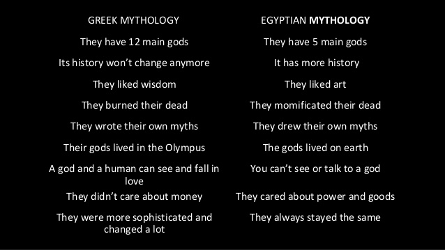
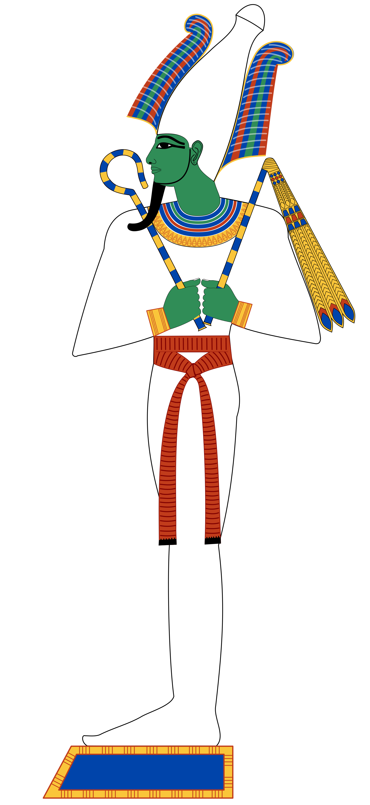

Grèka i egipatska mitologija imaju mnogo zajednièkog. Na primjer, Nun je u Grcima bio Pont ili Okean, bog mora. Amon, egipatski kralj bogova tijekom Novog kraljevstva, Grcima je bio Zeus. Neitin grèki pandan je Atena. Grci su smatrali da su Thoth i Anubis jednaki Hermesu, pa je nastao Hermanubis. Oziris je izjednaèen s Dionizom, a Set s Tifonom. Hathor je Grcima nimfa Io, a Izida Demetra. Grcima su, doduše, bogovi životinjskih glava bili bizarni i neobièni, ali su neke prihvatili.

Najstariji sin Nut i Geba, Oziris